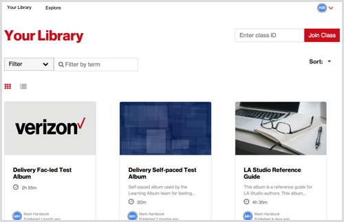
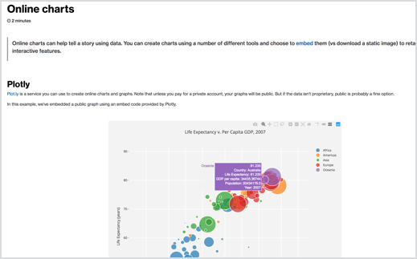
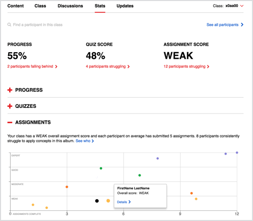
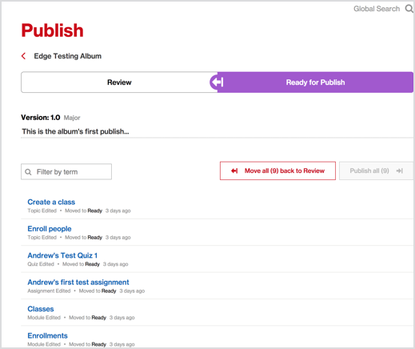

Senior product manager with 8+ years experience building and launching award-winning Software-as-a-Service (SaaS) products for global enterprise.
Thanks for checking out my portfolio!
I'm a creative product manager who builds software solutions that change the way people work, learn, and grow. I use a variety of techniques to gather customer insights (Jobs-to-be-Done and Kano are two of my favorites) and I'm passionate about using data to complement my decision making. I have experience orchestrating agile product release cycles and managing entire development teams. I love working at the intersection of business, design, engineering, and customer success.
This portfolio primarily features my product management work for Verizon. None of the examples shared include source code or proprietary customer/employee data.
If you have any questions or would like to hear more about my work, drop me a line.
Verizon uses the Learning Album to produce digital content for blended learning programs. I conceived of the platform in 2011 to accelerate the digital transformation of the HR team by unifying the creation, delivery, and analysis of learning content. I serve as the senior product manager, leading a team of 13 engineers, designers, and product owners. Under my leadership, we've scaled the platform to 250K employees and external partners around the world, saving Verizon millions of dollars in operational costs.
Four applications comprise the platform: Delivery, Studio, Stats, and the GraphQL API. I determine the strategy for the platform, maintain the overall product roadmap, and manage the development team working on each application.
|  |  |
|  |  |
Students and facilitators use this fully responsive web application to access and consume "learning albums" — custom eTextbooks containing all content necessary for blended learning programs. 20,000 people use the application every month to participate in training, and more than 50,000 classes have been delivered using a learning album. This application helped Verizon cut training expenditures over $7M a year by eliminating print costs and streamlining program administration.
How we evolved an eTextbook app into a global application
Instructional designers use this custom learning content management system (LCMS) to create and publish learning albums. Over 1,700 learning albums have been published since we launched the first version of the Studio application in 2014. This application helped cut training expenditures over $1M a year by streamlining content management processes.
How we built a CMS to rival any commercial competitor
Facilitators are provided analytics about activity within their learning album classes. Nearly 1,600 facilitators used this data in 2018 to validate the progress of their students. The latest version of the platform implements a time-series database that provides richer, real-time data that facilitators use to stage targeted learning interventions with their students.
How we produce data that helps people make decisions
Each Learning Album platform application is comprised of numerous services and API endpoints. We implemented a GraphQL API in version 6 to stitch together all of these endpoints and make it easy for clients to fetch the data they need. This improves system performance and makes our data more accessible to third-party applications in the Verizon learning ecosystem.
I earned a Scrum Master certification in 2010 and have managed projects using different versions of agile, including Scrum and Kanban. I try not to get hung up on "Process," as agile should be a means to an end and I don't believe there's one right way to do it. That being said, I have found that for my team a "Scrumban" approach provides a healthy balance of structure and flexibility.